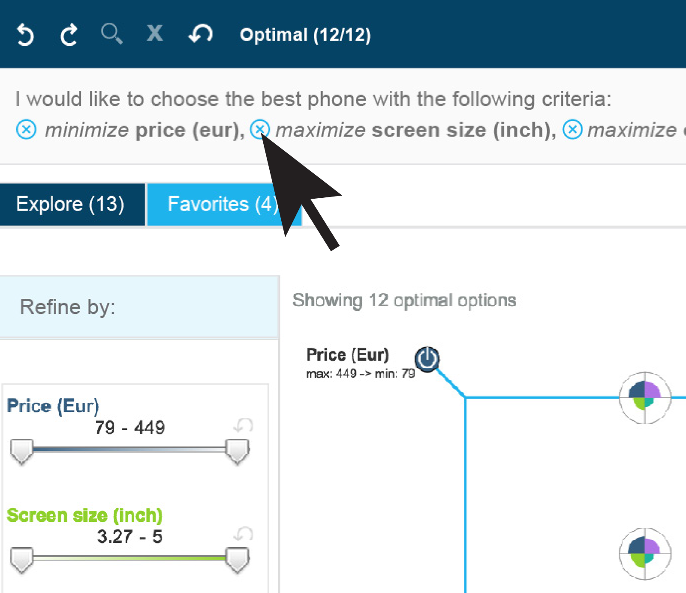

WELCOME!
How much better can your decision making get?
Watson's Tradeoff Analytics does the wizardly
job of sorting through all your search results to
provide you with the top options to compare.
| Explore different alternatives. Add or remove objectives and see how that impacts your top results. |  |
| Use the filters to refine your results. |